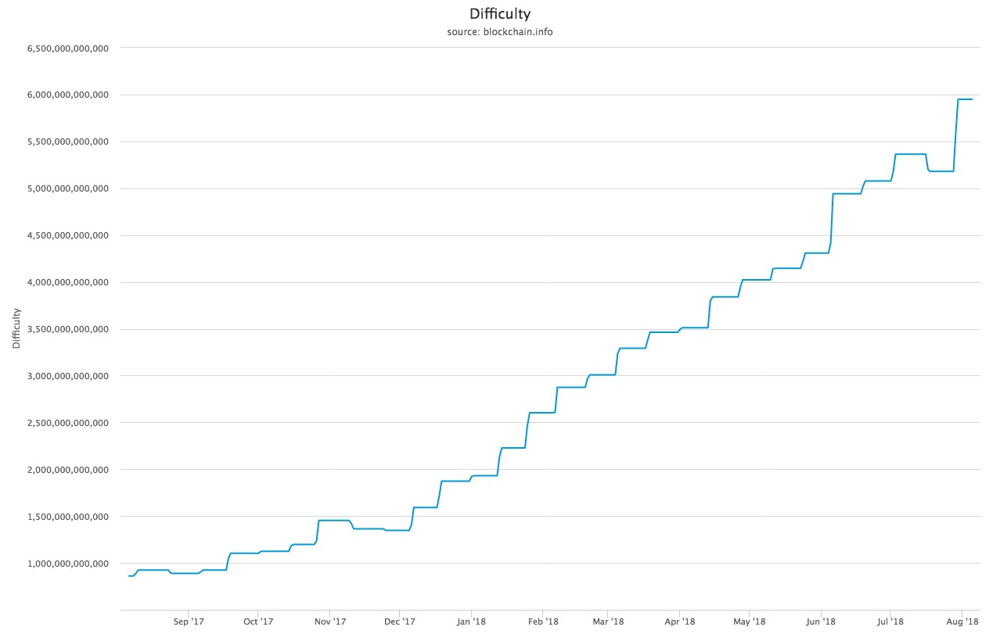

Preuve de travail vs preuve de l'enjeu
Une blockchain est donc un registre distribué chiffré,et répliqué dans tous les noeuds du réseau, qui contient les chaînesd’ordre permettant, grâce à l’obtention d’un consensus,de gérer la confiance sans institution externe .
Concernant la preuve de travail :
De l'anglais proof-of-work. Abrégé PoW.
Nous avons vu précedemment que la chaîne est constituée d'un ensemble de blocs de données contenant des informations ainsi qu'un horodatage. A chaque transaction, ces blocs sont intégrés à la chaîne.
Afin de garantir son intégrité, cette chaîne est chiffré et doit êtrecertifiée.
Pour certifier la transaction, de puissants ordinateurs constitués de noeuds en réseau réalisent des calculs cryptographiques.
Le travail global de certification se nomme « preuvede travail » (proof of work).
On appelle les machines (ou institutions) quieffectuent ce travail de certification des « mineurs » de l'anglais mining.
L'objet cryptographique crée par le mineur est la preuve du temps passé à la certification, il constitue la preuve de travail.
Il est essentiel de garantir la nature réelle du travail des parties prenantes afin de préserver le consensus.
Fruit d'une invention d'Adam Back, inventeur du protocole Hashcash, elle évite unclonage facile qui aurait pour conséquences de pouvoir controller la blockchain de manière rétroactive.
Le mécanisme est même plus sophistiqué :à intervalles de temps réguliers, la difficulté augmente.

Mesure relative de la difficulté de trouver un nouveau bloc. La difficulté est ajustée périodiquement en fonction de la puissance de hachage déployée par le réseau de mineurs.
Source: blockchain.com
La mise en concurrence est la méthode utilisée pour motiver à la certification, ainsi le premier mineur à valider un nouveau bloc sera récompensé.
Concernant le bitcoin, la tâche de certification était à l'origine accessible par les particuliers grâce à l'utilisation des cartes graphiques, dont la puissance pour le type de calcul nécessaire à la cetification est supérieure.
Depuis des mineurs spécifiques sont apparus pour réaliser la preuve de travail et les cartes graphiques grand-public sont délaissés car non compétitive.
Car plus la taille des chaînes augmente, plus la puissance de calcul doit augmenter. Cette relation d'interpendance a chassé les particuliers de la course à la certification et se sont désormais des institutions qui ont pris le relais.
La ferme de calcul bitfarms
Source : bitfarms.io
En Août 2018, il y avait 9 503 noeuds de traitement de la blockchain bitcoin dans le monde.

Global bitcoin nodes distribution
Source : bitnodes.earn.com
Les services de mining sont disponibles dans le cloud à travers le cloud-mining, ce qui reste néanmoins un modèle plus orienté vers les entreprises ou les grandes organisations que les particuliers.
Concernant la preuve de l’Enjeu :
De l'anglais proof-of-stake. Abrégé PoS.
Selon Usman W. Chohan, Proof-of-Stake Algorithmic Methods: A Comparative Summary
La preuve de l'enjeu est un algorithme différant de la PoW permettant d'obtenir un consensus distribué.
Dans les crypto-monnaies basées sur les PoS, le créateur du bloc suivant est choisi par diverses combinaisons de sélection aléatoire et de richesse ou d'âge (c'est-à-dire l'enjeu).
La preuve de l'enjeu (PoS) est une catégorie d'algorithmes de consensus pour les chaînes de blocs publics qui dépendent de l'enjeu économique d'un validateur dans le réseau. En preuve de travail (PoW), l'algorithme récompense les participants qui résolvent des puzzles cryptographiques afin de valider les transactions et de créer de nouveaux blocs (i.e. l'exploitation minière). Dans les chaînes de blocs publics basées sur les PdS (par exemple, l'implémentation prochaine de Casper d'Ethereum), un ensemble de validateurs se relaient pour proposer et voter sur le bloc suivant, et le poids du vote de chaque validateur dépend de la taille de son dépôt (c'est-à-dire de sa mise). Les avantages significatifs du PDS comprennent la sécurité, la réduction des risques de centralisation et l'efficacité énergétique.
En général, un algorithme de preuve de mise ressemble à ce qui suit. La chaîne de blocs garde la trace d'un ensemble de validateurs, et toute personne qui détient la cryptocurrency de base de la chaîne de blocs (dans le cas d'Ethereum, ether) peut devenir un validateur en envoyant un type spécial de transaction qui enferme son éther dans un dépôt. Le processus de création et d'acceptation de nouveaux blocs se fait alors par le biais d'un algorithme de consensus auquel tous les validateurs actuels peuvent participer.
Il existe de nombreux types d'algorithmes de consensus et de nombreuses façons d'attribuer des récompenses aux validateurs qui participent à l'algorithme de consensus, de sorte qu'il existe de nombreuses "saveurs" de preuve de l'enjeu. D'un point de vue algorithmique, il existe deux types principaux : la preuve en chaîne de l'enjeu et la preuve de l'enjeu de type BFT.
Dans la preuve de mise basée sur la chaîne, l'algorithme choisit un validateur au hasard pendant chaque tranche de temps (par exemple, chaque période de 10 secondes peut être une tranche de temps), et assigne à ce validateur le droit de créer un bloc unique, et ce bloc doit pointer vers un bloc précédent (normalement le bloc à la fin de la chaîne la plus longue précédemment), et ainsi, au fil du temps, la plupart des blocs convergent vers une chaîne unique en croissance constante.
Dans la preuve de mise de type BFT, les validateurs se voient attribuer au hasard le droit de proposer des blocs, mais s'accorder sur quel bloc est canonique se fait à travers un processus à plusieurs tours où chaque validateur envoie un "vote" pour un bloc spécifique pendant chaque tour, et à la fin du processus, tous les validateurs (honnêtes et en ligne) s'accordent en permanence sur le fait qu'un bloc donné fait ou non partie de la chaîne.
Notez que les blocs peuvent encore être enchaînés ensemble ; la principale différence est que le consensus sur un bloc peut se situer à l'intérieur d'un bloc et ne dépend pas de la longueur ou de la taille de la chaîne qui suit.
Avantages de la preuve de l'enjeu par rapport à la preuve de travail :
Quels sont les avantages de la preuve de l'enjeu par rapport à la preuve du travail ?
Il n'est pas nécessaire de consommer de grandes quantités d'électricité pour sécuriser une chaîne de blocs (par exemple, on estime que Bitcoin et Ethereum brûlent plus d'un million de dollars d'électricité et de matériel informatique par jour dans le cadre de leur mécanisme de consensus)
En raison de la faible consommation d'électricité, il n'est pas nécessaire d'émettre autant de nouvelles pièces afin de motiver les participants à continuer à participer au réseau. Il peut même théoriquement être possible d'avoir une émission nette négative, où une partie des frais de transaction est "brûlée" et où l'offre diminue au fil du temps. La preuve de l'enjeu ouvre la porte à un plus large éventail de techniques qui utilisent la conception de mécanismes de la théorie des jeux afin de mieux décourager les cartels centralisés de se former et, s'ils se forment, d'agir d'une manière nuisible au réseau (p. ex. comme l'exploitation minière égoïste dans la preuve du travail).
Réduction des risques de centralisation, car les économies d'échelle sont beaucoup moins problématiques. 10 millions de pièces vous rapporteront exactement 10 fois plus que 1 million de pièces, sans gains disproportionnés supplémentaires parce qu'au niveau supérieur, vous pouvez vous permettre d'acheter de meilleurs équipements de production de masse, ce qui est un avantage pour la preuve du travail.
Capacité d'utiliser des pénalités économiques pour rendre les différentes formes d'attaques de 51% beaucoup plus coûteuses à réaliser que la preuve du travail - pour paraphraser Vlad Zamfir, "c'est comme si votre ferme ASIC brûlait si vous participiez à une attaque de 51%".